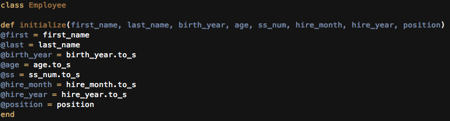
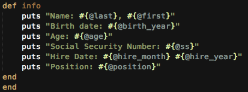
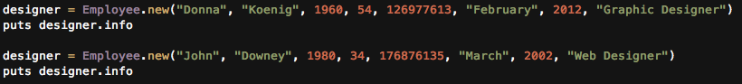
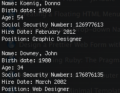

Week Five Technical Blog
Classes
A class is a blueprint for objects that are of a similar kind. Single block codes are good for short utility scripts, but classes are better when needing to define multiple objects. I will give an example of an employee list.
Here is the initialize method. Whenever Ruby creates a new object, it looks for a method named initialize and executes it.Initialize sets the default values to instance varaibles.
Here I create a method that will be called when wanting to get the information on an employee.
Here I am creating a new object which is from the employee class. Then I want to print the information on that employee.
And here is what it will look like when returned.
